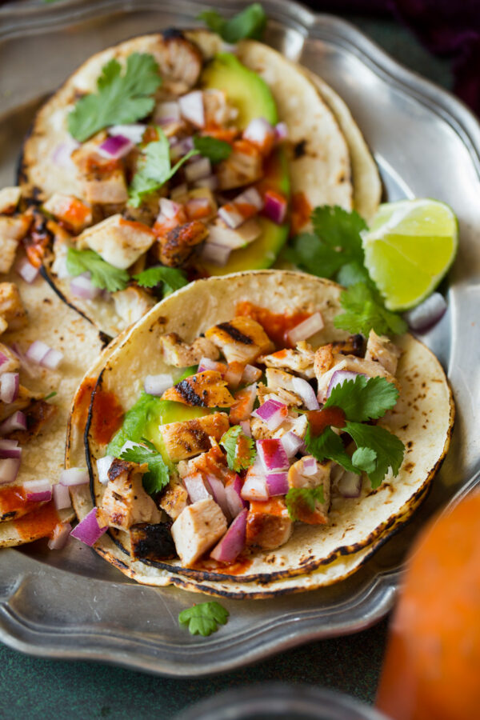

A quick and simple recipe for delicious grilled chicken street tacos
Ingredients
- 1 1/2 lb boneless chicken thighs
- 1 1/2 tablespoons lime juice
- 3 cloves garlic, minced
- 1 1/2 tablespoons chili powder
- 1 1/2 tablespoons cumin
- 2 teaspoons dried oregano
- 2 teaspoons paprika
- 1 teaspoon salt
- 1 pinch freshly ground pepper
- 2 tablespoons apple cider vinegar
- 2 tablespoons olive oil
- 1/2 cup of chopped cilantro
- 1/2 cup chopped white onion
- 20-22 mini tortillas
- Pico de gallo (optional)
- Sour Cream (optional)
Recipe Instructions
- Make chicken marinade by combining all spices, olive oil, lime juice, and apple cider vinegar in a large ziplock bag. Add chicken thighs.
- Refrigerate for at least 1 hour or up to overnight.
- Preheat grill over medium-hight heat. Oil the grill with canola oil or spray generously with cooking spray. Remove chicken with marinade and place on hot grill.
- Cook for about 4-5 minutes on each side, flipping once.
- Transfer to a plate and allow to rest for a few minutes before chopping the chicken into small pieces.
- Heat tortillas in a pan until warm.
- Top with chopped chicken, pico de gallo, cilantro, hot sauce, and sour cream (optional). Spritz with a little bit of lime juice. Serve immediately.
- Enjoy! Best Served with beans and Mexican Rice
Return to top